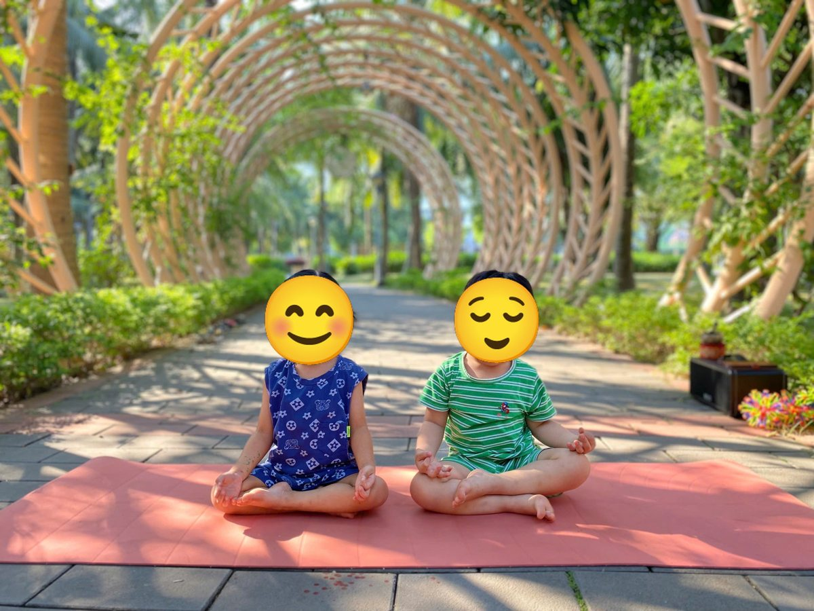

Yoga người lớn · Yoga trẻ em · Kiến thức yoga
Mantra: lặp lại một âm thanh để tâm được về nhà

Có những buổi tối đầu óc cô ồn như cái chợ.
Việc ngày mai. Lời ai đó nói lúc chiều. Một nỗi lo chẳng đâu vào đâu. Cố ngồi thiền thì suy nghĩ cứ kéo nhau đi. Những lúc ấy, cách dễ nhất với cô là cho cái đầu một việc thật đơn giản để làm. Ngân một tiếng Om. Rồi một tiếng nữa.
Tiếng thứ ba thì hơi thở đã dài ra. Vai hạ xuống. Cái chợ trong đầu vãn bớt người.
Đó là mantra. Không có gì bí hiểm. Chỉ là một âm thanh, một câu ngắn, được lặp lại với sự chú tâm. Người Ấn Độ làm việc này từ hơn ba nghìn năm trước. Các nhà khoa học bây giờ đặt người tụng vào máy chụp não để xem chuyện gì xảy ra. Bài này Sophia gom cả hai lại: chuyện xưa, chuyện nay, cách tụng, cách dạy các con, và những kênh hay để nghe thêm.
- Mantra là gì?
- Bắt đầu từ đâu
- Não bộ và cơ thể
- Cho tâm hồn
- 4 câu mantra
- Cách tụng
- Lần hạt cùng cô
- Dạy các con
- Nghe thêm
- Hỏi đáp
- Nguồn tham khảo
Mantra là gì?
Tiếng Phạn: man là tâm, là suy nghĩ. Tra là công cụ, là thứ để che chở, dẫn đường. Mantra là công cụ cho tâm: một âm, một chữ hay một câu được lặp đi lặp lại để gom sự chú ý về một chỗ.
Việc lặp lại ấy gọi là japa. Chuỗi hạt để đếm gọi là mala, thường có 108 hạt.
Mantra khác lời cầu xin. Mình không đọc để đòi một điều gì. Mình đọc để âm thanh làm chỗ tựa, giống như tay vịn khi đi cầu thang trong bóng tối. Suy nghĩ có trôi đi đâu, cứ quay về với câu mantra. Lần này qua lần khác.
Trong yoga, mantra nằm cùng nhà với hơi thở và thiền. Mỗi câu mantra là một hơi thở ra có lời. Vì thế người tụng lâu thường thở chậm, sâu mà không cần cố.
Mantra bắt đầu từ đâu
Câu chuyện dài lắm. Sophia kể theo từng chặng cho dễ nhớ.
Khoảng 1500 đến 1200 năm trước Công nguyênKinh Vệ Đà. Rig Veda, bộ kinh cổ nhất của Ấn Độ, thực chất là hơn một nghìn bài thánh ca. Người xưa không viết ra mà thuộc lòng, truyền miệng từ thầy sang trò qua nhiều thế hệ, giữ đúng từng âm, từng nhịp. Câu Gayatri nổi tiếng nằm ở Rig Veda, quyển 3, bài 62, câu 10.
Các UpanishadOm được đặt vào trung tâm. Mandukya Upanishad chỉ có 12 câu, toàn nói về Om. Theo bản kinh này, A ứng với lúc thức, U với lúc mơ, M với giấc ngủ sâu. Còn khoảng lặng sau tiếng M là trạng thái thứ tư, tĩnh tại, bao trùm cả ba.
Yoga Sutra của PatanjaliJapa thành một phép tu tập. Câu 1.27 và 1.28 nói: âm biểu hiện cho Đấng tối cao là Om (pranava). Hãy lặp lại nó và quán chiếu ý nghĩa của nó. Lặp mà có hiểu. Không lặp như cái máy.
Phật giáo, khoảng thế kỷ 4, 5Chân ngôn và thần chú. Om Mani Padme Hum xuất hiện trong kinh Karandavyuha, gắn với Bồ Tát Quán Thế Âm, rồi theo các nhà sư sang Tây Tạng, Trung Hoa. Ở Việt Nam, câu “Nam mô A Di Đà Phật” trong pháp môn niệm Phật cũng là một cách lặp danh hiệu với tâm chuyên chú.
Thế kỷ 20Mantra đi ra thế giới. Thiền siêu việt (TM) với mantra cá nhân lan khắp phương Tây những năm 1960. Năm 1975, bác sĩ tim mạch Herbert Benson ở Harvard viết cuốn The Relaxation Response. Ông chỉ ra rằng lặp một từ, một âm, một câu cầu nguyện, kèm thái độ buông lỏng, là đủ để cơ thể chuyển sang trạng thái nghỉ ngơi, dù người đó theo tôn giáo nào hay không theo tôn giáo nào.
Hôm nayPhòng thí nghiệm. Các nhóm nghiên cứu ở Ấn Độ, Ý, Israel, Mỹ đo hơi thở, nhịp tim, chụp não người đang tụng. Phần tiếp theo là những gì họ thấy.
Cô muốn nói rõ một điều. Mantra có gốc rễ trong truyền thống Vệ Đà và Phật giáo, và Sophia trân trọng gốc rễ đó. Nhưng bạn không cần theo một tôn giáo nào để tập. Bạn có thể tụng như một cách thư giãn, một bài tập hơi thở và sự chú tâm. Ai có đức tin riêng thì cứ dùng câu niệm của đức tin mình.
Điều gì xảy ra trong não bộ và cơ thể
1. Hơi thở chậm còn khoảng 6 hơi mỗi phút. Năm 2001, nhóm bác sĩ ở Florence và Pavia (Ý) cho 23 người khỏe mạnh đọc kinh Mân Côi bằng tiếng Latin và đọc một câu mantra yoga. Cả hai đều tự nhiên kéo nhịp thở về khoảng 6 lần mỗi phút. Lúc đó nhịp tim, huyết áp dao động đều và đồng bộ với nhau. Độ nhạy của phản xạ áp lực (cơ chế tự giữ huyết áp ổn định) tăng rõ.
Bernardi và cộng sự, BMJ 2001; 323: 1446–1449.
2. Vùng cảm xúc lắng xuống khi ngân Om. Năm 2011, các nhà nghiên cứu ở Bangalore chụp cộng hưởng từ chức năng (fMRI) 12 người trong lúc ngân Om thành tiếng, so với lúc nghỉ và lúc phát âm “ssss”. Khi ngân Om, nhiều vùng liên quan đến cảm xúc giảm hoạt động: hạch hạnh nhân (bên phải), hồi hải mã, vỏ não trán ổ mắt, hồi đai trước. Tiếng “ssss” thì không làm được như vậy. Chính các tác giả nói đây là nghiên cứu thử nghiệm nhỏ, chưa tách được tác động của việc thư giãn.
Kalyani và cộng sự, International Journal of Yoga 2011; 4(1): 3–6.
3. Bớt suy nghĩ lan man. Năm 2015, một nhóm ở Israel cho 23 người chưa từng thiền thầm lặp lại một từ duy nhất trong máy chụp não. Kết quả: hoạt động giảm trên diện rộng ở vỏ não, rõ nhất ở “mạng mặc định”, mạng lưới chuyên lo nghĩ về bản thân, nhớ chuyện cũ, tính chuyện sau. Người tham gia cũng kể là ít suy nghĩ vẩn vơ hơn so với lúc ngồi nghỉ. Các tác giả cho rằng đây có thể là lý do mantra giúp người ta thấy bình tâm.
Berkovich-Ohana và cộng sự, Brain and Behavior 2015; 5(7): e00346.
4. Tiếng “mmm” và cái mũi. Năm 2002, hai nhà khoa học Thụy Điển đo khí nitric oxide (NO) trong mũi của 10 người. Khi ngân “mmm”, lượng NO tăng khoảng 15 lần so với thở ra lặng lẽ. Khí này có vai trò trong việc giữ mũi và xoang thông thoáng. Phần “M” của Om, hay tiếng ong vo ve, chính là kiểu ngân này.
Weitzberg và Lundberg, American Journal of Respiratory and Critical Care Medicine 2002; 166(2): 144–145.
5. Nhìn tổng thể nhiều nghiên cứu. Một phân tích gộp năm 2022 các thử nghiệm ngẫu nhiên có đối chứng về thiền dùng mantra cho thấy mức giảm nhỏ đến vừa ở lo âu, trầm cảm, căng thẳng, căng thẳng sau sang chấn, và chất lượng sống về tinh thần tốt lên. Các tác giả cũng nhắc: nhiều nghiên cứu còn nguy cơ sai lệch, ít nghiên cứu theo dõi lâu dài. Một tổng quan năm 2018 trên 37 nghiên cứu ở người khỏe mạnh cũng kết luận tương tự: có dấu hiệu tốt, nhưng chất lượng nghiên cứu phần lớn còn yếu.
Álvarez-Pérez và cộng sự, IJERPH 2022; 19(6): 3380. Lynch và cộng sự, European Journal of Integrative Medicine 2018; 23: 101–108.
Còn một nghiên cứu nhiều người hay nhắc: năm 2010, nhóm của bác sĩ Andrew Newberg và Dharma Singh Khalsa cho người có vấn đề về trí nhớ tập Kirtan Kriya (đọc “Sa Ta Na Ma” kèm chạm ngón tay) 12 phút mỗi ngày trong 8 tuần. Họ thấy hoạt động tăng ở những vùng não liên quan đến trí nhớ, nhận thức cũng khá lên. Đó là nghiên cứu thử nghiệm, rất nhỏ. Hay, nhưng cô chưa dám nói nhiều hơn thế.
Nói gọn lại. Mantra không chữa bệnh. Nó không thay thuốc, không thay bác sĩ. Điều nó làm được là giúp hơi thở chậm lại và cho tâm một chỗ để đậu. Với nhiều người, chừng ấy đã là một món quà.
Mantra cho tâm hồn
Phần này khó đo bằng máy. Sophia kể theo cách nhìn của yoga cân bằng: con người có năm lớp, năm thể, và mantra chạm được vào cả năm.
Thân
Âm thanh rung trong bụng, ngực, đầu. Mình cảm được cơ thể từ bên trong.
Khí
Mỗi câu là một hơi thở ra dài. Hơi thở tự chậm, tự đều.
Tâm
Cảm xúc dịu lại. Lo, giận, buồn có chỗ để lắng xuống.
Trí
Suy nghĩ có một điểm tựa. Lạc đi thì biết, rồi quay về.
Tinh thần
Lời chúc, lời thương được gieo xuống mỗi ngày. Mình thấy mình nối với mọi người.
Đọc thêm về năm thể ở bài Năm thể của con người.
Có một điều cô để ý. Những câu mình lặp lại mỗi ngày dần thành giọng nói bên trong mình. Nhiều người đang lặp “mình chẳng làm được gì ra hồn” cả ngày mà không biết. Mantra cho mình cơ hội chọn lại câu đó. Một câu hiền hơn. Một câu thương mình hơn.
Bốn câu mantra quen thuộc
Phiên âm dưới đây Sophia viết theo cách đọc gần đúng cho người Việt. Đọc chưa chuẩn cũng không sao. Sự chú tâm quan trọng hơn độ chuẩn của âm.
Om (Aum)
- Cách đọc
- Ô… ôm…mmm. Thực ra là ba âm A, U, M nối liền. Miệng mở ở “A”, môi tròn dần ở “U”, khép lại ở “M” và để tiếng “mmm” ngân lâu nhất. Một hơi thở ra là một tiếng Om.
- Nghĩa
- Không dịch được thành một chữ. Các Upanishad coi Om là âm của toàn thể: điều đã có, đang có và sẽ có. Người tập bây giờ hay hiểu đơn giản là âm của sự tĩnh lặng.
- Dùng khi nào
- Mở đầu hoặc kết thúc buổi tập. Khi muốn gom tâm về. Ba tiếng là đủ.
Om Mani Padme Hum
- Cách đọc
- Ôm ma-ni pát-mê hum theo tiếng Phạn. Người Tây Tạng đọc gần như “Ôm ma-ni pê-mê hung”. Chùa Việt quen gọi là Lục tự đại minh chân ngôn, đọc “Án ma ni bát di hồng” hoặc “Úm ma ni bát mê hồng”.
- Nghĩa
- Mani là viên ngọc, padme là trong hoa sen. Hay được hiểu là “viên ngọc trong hoa sen”: trí tuệ và lòng từ bi nằm sẵn ở bên trong mỗi người. Đây là câu chú gắn với Bồ Tát Quán Thế Âm. Các nhà nghiên cứu vẫn còn bàn nhiều cách hiểu khác nhau.
- Dùng khi nào
- Khi muốn nuôi lòng thương: thương mình, thương người. Đọc chậm, nhịp đều, có thể lần hạt.
So Hum (So’ham)
- Cách đọc
- Sô… hum. Không cần ra tiếng. Hít vào, thầm nghe “Sooo”. Thở ra, thầm nghe “Hummm”.
- Nghĩa
- “Ta là Đó”: mình là một phần của sự sống rộng lớn. Câu “so ’ham asmi” đã có trong Isha Upanishad. Truyền thống gọi cách niệm này là ajapa japa, “lời niệm không cần niệm”, vì hơi thở tự nói giùm mình.
- Dùng khi nào
- Hợp với người mới, người ngại cất tiếng. Ngồi chờ, nằm trước khi ngủ, lúc lo lắng đều dùng được.
Lokah Samastah Sukhino Bhavantu
- Cách đọc
- Lô-ka sa-mát-ta su-khi-nô bha-van-tu. Bốn cụm, mỗi cụm một nhịp. Hay được hát cuối buổi tập, cả lớp cùng đọc ba lần.
- Nghĩa
- “Nguyện cho muôn loài ở khắp mọi nơi được an vui.” Câu này là phần cuối của một bài kệ chúc lành dài hơn. Nguồn gốc chính xác chưa rõ, bản khắc cổ nhất người ta tìm thấy là trên bia đá thời vua Sangama ở Nam Ấn (thế kỷ 14, 15).
- Dùng khi nào
- Kết thúc buổi tập, trước bữa cơm, trước khi ngủ. Rất hợp để dạy các con.
Ngoài bốn câu này còn rất nhiều: Gayatri, Om Namah Shivaya, Om Shanti Shanti Shanti (bình an cho thân, cho tâm, cho mọi điều quanh mình)… Người mới thì cô gợi ý bắt đầu với Om hoặc So Hum. Ngắn, dễ, không vướng nghĩa tôn giáo nhiều.
Cách tụng mantra từng bước
Có ba cách tụng. Truyền thống xếp từ dễ đến tinh tế dần.
Đọc thành tiếng
Dễ giữ sự chú ý nhất. Hợp với người mới và các con.
Thì thầm
Môi mấp máy, chỉ mình nghe. Hợp khi ở nơi đông người.
Niệm trong tâm
Không ra tiếng. Sâu nhất, cũng dễ lạc nhất.
- Chọn một câu và giữ nó một thời gian. Đừng mỗi ngày một câu. Ở với một câu vài tuần, nó mới thành chỗ quen của tâm.
- Ngồi cho thoải mái. Xếp bằng trên gối, hoặc ngồi ghế, hai bàn chân chạm sàn. Lưng thẳng mà mềm. Vai thả. Mắt khép hờ.
- Thở vài hơi tự nhiên. Để ý hơi vào, hơi ra. Chưa cần tụng vội.
- Hít vào bằng mũi, tụng trong lúc thở ra. Một câu cho một hơi thở ra. Câu dài thì chia hai hơi. Không ép hơi, không cố cho to.
- Lạc đi thì quay về. Thấy mình đang nghĩ chuyện khác, nhẹ nhàng đọc lại câu mantra. Không trách mình. Quay về chính là bài tập.
- Bắt đầu 5 phút, hoặc 27 hạt. Quen rồi mới tăng lên 10, 15 phút, hay đủ 108 hạt. Đều đặn mỗi ngày quý hơn một lần thật lâu.
- Ngồi yên một chút sau cùng. Khoảng im lặng sau tiếng tụng là phần ngọt nhất. Đừng vội đứng dậy.
Cầm chuỗi hạt mala thế nào? Chuỗi vắt qua ngón giữa tay phải. Ngón cái kéo từng hạt về phía mình, mỗi hạt một câu. Truyền thống Ấn Độ thường không dùng ngón trỏ. Bắt đầu từ hạt ngay cạnh hạt chủ (hạt to có tua). Đủ một vòng thì không vượt qua hạt chủ, mà xoay chuỗi lại đi ngược chiều.
Không có chuỗi hạt? Đếm bằng đốt ngón tay, hoặc dùng chuỗi hạt trên trang này.
Mỗi người hợp một kiểu. Người hay lo nghĩ thường thấy đọc thành tiếng dễ hơn niệm thầm. Người nhạy cảm với âm thanh có thể bắt đầu bằng So Hum, chỉ theo hơi thở.
Vài điều cô hay nhắc
- Tụng to lâu dễ khản giọng. Vừa sức thôi. Thấy cổ họng khô thì uống nước ấm, chuyển sang thì thầm.
- Ngân dài mà thấy choáng, khó chịu, thì dừng, thở tự nhiên. Không giữ hơi, không cố kéo dài hơn sức.
- Người đang có lo âu nặng, trầm cảm, hay từng trải qua sang chấn: ngồi tĩnh đôi khi làm cảm xúc cũ trồi lên. Tập ngắn, mở mắt cũng được, có người đồng hành, và vẫn giữ việc điều trị với bác sĩ.
- Mantra không thay cho thuốc hay chữa trị. Nó là một phần của lối sống cân bằng, cùng với ăn ngủ điều độ, vận động, hơi thở.
Video và chuỗi hạt để tụng cùng cô
Video dưới đây dẫn bạn ngân bốn tiếng Om, thấy âm thanh đi từ bụng lên ngực rồi lên đầu. Sau đó là ba hơi thở với So Hum, không cần ra tiếng. Có tiếng chuông nhẹ ở đầu mỗi vòng.
Còn đây là chuỗi hạt 108. Chọn câu mantra, rồi mỗi lần đọc xong một câu, chạm vào chuỗi (hoặc bấm nút vàng). Muốn để tay nghỉ thì bấm “Tự lần hạt”, hạt sẽ tự đi theo nhịp thở bạn chọn. Đủ 108 hạt có tiếng chuông.
Ngồi thẳng, thở vài hơi. Rồi bắt đầu từ hạt đầu tiên, ngay cạnh hạt chủ.
Thích ngồi theo thời gian hơn là đếm hạt? Chọn số phút rồi bấm Bắt đầu. Chuông ngân lúc bắt đầu và lúc hết giờ, ở giữa bạn chỉ cần tụng.
Cách dạy mantra cho các con

Trẻ con mê âm thanh. Cho các con ngân, hát, thì thầm, con làm ngay, không cần giải thích nhiều. Với các con, mantra không phải bài học tôn giáo. Nó là trò chơi của hơi thở và giọng nói, và là cách nhỏ để con biết tự làm mình dịu lại.
Vài điều Sophia giữ khi dạy:
- Tôn trọng niềm tin của mỗi gia đình. Ở trường, ở lớp đông, cô ưu tiên âm thanh (tiếng ong, Om như một tiếng ngân) và câu tiếng Việt. Câu tiếng Phạn thì giải thích nghĩa đơn giản, như một lời chúc.
- Ngắn thôi. Một đến ba phút là vừa. Các con muốn làm thêm thì làm thêm.
- Không ép nhắm mắt, không ép ngồi im. Con nào muốn mở mắt, muốn nằm, cứ để con.
- Cho con chọn. Con được chọn câu của mình thì con nhớ và thương câu ấy hơn.
- Người lớn làm cùng. Trẻ học bằng cách nhìn. Bố mẹ, cô giáo ngân cùng thì các con mới thấy đó là điều đáng làm.
🐝 Ong vo ve
3 đến 6 tuổiCả lớp ngậm miệng, ngân “mmm” thật dài như đàn ong bay về tổ. Hai tay khum che tai thì nghe tiếng rung trong đầu rõ lắm. Đây là tiếng “M” của Om, chỉ là chưa cần gọi tên. Bài đầy đủ ở thở ong vo ve.
🏠 Om ba tầng
4 tuổi trở lênTay đặt lên bụng ngân “Aaa”, lên ngực ngân “Uuu”, lên đỉnh đầu ngân “Mmm”. Con hỏi “sao tay con rung rung”? Đó là lúc con tự khám phá ra âm thanh đi được vào trong người mình.
✋ Sa Ta Na Ma, chạm ngón tay
5 tuổi trở lênNgón cái lần lượt chạm ngón trỏ, giữa, áp út, út, mỗi lần đọc một tiếng. Vòng một đọc to, vòng hai thì thầm, vòng ba đọc trong đầu. Các con thích lắm vì nó như trò chơi. Thử ngay ở ô bên dưới.
🌸 Câu niệm tiếng Việt
mọi lứa tuổiMantra không bắt buộc là tiếng Phạn. “Hít vào tâm tĩnh lặng, thở ra miệng mỉm cười.” “Con bình an.” “Con thương con.” Một câu ngắn, có nhịp, lặp lại theo hơi thở. Vậy là đủ.
💛 Lời chúc cuối buổi
mọi lứa tuổiHai tay đặt lên tim, cả lớp đọc “Lokah Samastah Sukhino Bhavantu”, rồi nói bằng tiếng Việt: “Chúc cho mọi người, mọi con vật, mọi cái cây đều vui.” Giống lời cô thầm chúc trong buổi yoga massage trẻ em.
📿 Xâu vòng hạt 27
6 tuổi trở lênMỗi bạn tự xâu một chiếc vòng tay 27 hạt (một phần tư của 108). Về nhà, mỗi tối lần một vòng với câu con chọn. Có món đồ tự làm, con nhớ việc thực hành lâu hơn.
Thử ngay: Sa Ta Na Ma. Bấm Bắt đầu, đọc theo ngón tay đang sáng. Vòng 1 đọc to, vòng 2 thì thầm, vòng 3 đọc trong đầu.
Ngón cái chạm lần lượt từng ngón

Muốn đi sâu hơn về chánh niệm cho các con, bố mẹ và cô giáo có thể đọc thêm Yoga cho bé hay cáu giận, khóc nhè và Yoga cho bé khó tập trung.
Kênh YouTube và trang web để nghe thêm
Sophia đã mở từng đường link dưới đây để chắc chắn video, trang web có thật và đúng nội dung (kiểm tra ngày 19/11/2026). Phần lớn bằng tiếng Anh hoặc tiếng Phạn. Video trên YouTube đôi khi bị chủ kênh gỡ, nếu link nào không mở được, bạn nhắn cô nhé.
Hỏi đáp nhanh
Không theo đạo nào thì có tụng mantra được không?
Được. Bạn có thể xem mantra như một bài tập hơi thở và sự chú tâm. Om, So Hum, hay một câu tiếng Việt đều dùng được. Ai có đức tin riêng thì dùng câu niệm của đức tin mình.
Đọc sai âm tiếng Phạn có sao không?
Truyền thống Vệ Đà rất coi trọng độ chuẩn của âm. Nhưng với người tập để thư giãn và tĩnh tâm, sự chú ý và lòng thành quan trọng hơn. Nghe vài lần ở các kênh bên trên, rồi đọc theo khả năng của mình.
Tụng to hay niệm thầm tốt hơn?
Không có cái nào hơn. Mới tập, đọc thành tiếng giữ sự chú ý dễ hơn. Quen rồi, chuyển dần sang thì thầm, rồi niệm trong tâm.
Bao lâu thì thấy khác?
Nhiều người thấy hơi thở dịu ngay trong buổi đầu. Còn thay đổi về tâm, như ít bực bội, dễ ngủ hơn, thì cần đều đặn vài tuần. Mỗi ngày năm phút quý hơn mỗi tuần một tiếng.
Các con mấy tuổi thì tập được?
Ba tuổi đã ngân tiếng ong được rồi. Từ năm, sáu tuổi, các con chơi Sa Ta Na Ma, đọc câu chúc ngắn rất tốt. Vẫn giữ ngắn và vui.
Một câu nhỏ, mỗi ngày
Mantra dạy cô rằng tâm không cần được dỗ bằng điều gì lớn lao. Một âm. Một câu hiền. Lặp lại, với sự có mặt, ngày này qua ngày khác. Tối nay, trước khi ngủ, thử ba tiếng Om xem. Rồi ngồi yên, nghe khoảng lặng sau cùng.
🌿 Muốn tập thở, tụng và dạy các con cùng Sophia?
Khóa Đào tạo HLV Yoga trẻ em có phần chánh niệm, hơi thở, âm thanh và cách dẫn các con ngồi yên một cách vui vẻ. Người lớn có lớp Thở cơ bản 10 buổi, lớp yoga online qua Zoom và kèm 1 kèm 1 (500.000đ / giờ).
Đọc thêm: Thở ong vo ve · Hơi thở bốn thì · Đạo Phật và yoga · Yoga cho người căng thẳng, lo âu.
Nguồn tham khảo
- Bernardi L., Sleight P., Bandinelli G. và cộng sự (2001). Effect of rosary prayer and yoga mantras on autonomic cardiovascular rhythms: comparative study. BMJ 323(7327): 1446–1449. PubMed
- Kalyani B.G., Venkatasubramanian G., Arasappa R. và cộng sự (2011). Neurohemodynamic correlates of ‘OM’ chanting: A pilot functional magnetic resonance imaging study. International Journal of Yoga 4(1): 3–6. Đọc toàn văn
- Berkovich-Ohana A., Wilf M., Kahana R., Arieli A., Malach R. (2015). Repetitive speech elicits widespread deactivation in the human cortex: the “Mantra” effect? Brain and Behavior 5(7): e00346. Tóm tắt
- Weitzberg E., Lundberg J.O.N. (2002). Humming greatly increases nasal nitric oxide. American Journal of Respiratory and Critical Care Medicine 166(2): 144–145. PubMed
- Álvarez-Pérez Y., Rivero-Santana A., Perestelo-Pérez L. và cộng sự (2022). Effectiveness of Mantra-Based Meditation on Mental Health: A Systematic Review and Meta-Analysis. IJERPH 19(6): 3380. Tóm tắt
- Lynch J., Prihodova L., Dunne P.J. và cộng sự (2018). Mantra meditation for mental health in the general population: A systematic review. European Journal of Integrative Medicine 23: 101–108. Tóm tắt
- Newberg A.B., Wintering N., Khalsa D.S. và cộng sự (2010). Nghiên cứu thử nghiệm về Kirtan Kriya ở người suy giảm trí nhớ, Journal of Alzheimer’s Disease 20(2). Tin tóm tắt
- Herbert Benson (1975). The Relaxation Response. William Morrow.
- Rig Veda 3.62.10 (Gayatri). Mandukya Upanishad. Isha Upanishad câu 16. Yoga Sutra của Patanjali, 1.27–1.28.
- Wikipedia: Om mani padme hum (kinh Karandavyuha, thế kỷ 4–5) và Lokaksema (nguồn gốc câu Lokah Samastah, bia đá triều Sangama 1336–1485).